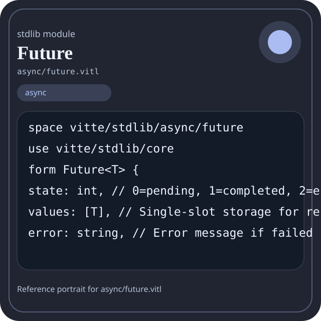

Stdlib module async/future.vitl
This page is a wiki-style reference for one concrete stdlib file. It explains what the file owns, where it fits in the family, and how to decide whether this is the right surface to depend on.

async/future.vitl.Family: async
Kind: public stdlib surface
Page style: this reference follows the same “encyclopedic card + portrait + usage contract” logic as the keyword pages, but for stdlib modules.
Summary
- Overview
- Purpose
- Taxonomy
- Implementation profile
- Top-level API inventory
- Position in family
- Declaration map
- Representative signatures
- How to use this module
- User example
- Keyword coverage
- Source shape
- Source landmarks
- Source organization
- Complete API catalog
- Integration boundaries
- Composition guidance
- Relationship table
- Neighbor modules
Overview
| Field | Value |
|---|---|
| Path | async/future.vitl |
| Family | async |
| Kind | public stdlib surface |
| Line count | 222 |
| Declared procedures | 24 |
| Declared forms/picks | 1 |
`async/future.vitl` is a public stdlib surface inside the `async` family. It should be read as one focused slice of the broader family responsibility: Future, channel, executor, and task orchestration helpers.
Purpose
This file should be chosen because of responsibility, not because its name “sounds close enough”. Inside the async family, it carries one focused part of the contract and keeps that responsibility separate from neighboring concerns.
- Use this module when coordination and scheduling are explicit parts of the design.
- A pipeline can spawn tasks, exchange messages through channels, and join through the executor boundary.
Taxonomy
Think of this page as a generated encyclopedia entry rather than a hand-written tutorial. The goal is to show what kind of module this is, how dense it is, and what reading strategy makes sense before depending on it.
- Large algorithm surface: this file exposes many procedures and likely acts as a domain toolkit rather than a single thin wrapper.
- Owns domain vocabulary: the module declares data shapes in addition to executable helpers, so its types are part of the contract.
- Narrow dependency fan-in: a small set of imports suggests a focused collaboration surface.
- Explicit export surface: the file ends with visible export declarations instead of relying only on implicit namespace discovery.
Implementation profile
This profile is inferred directly from the source text. It does not replace reading the file, but it tells you quickly whether the module is mostly declarative, loop-heavy, branch-heavy, or organized around many small exits.
| Signal | Count | What it suggests |
|---|---|---|
if | 11 | Branching density and local decision-making. |
while | 4 | Loop-heavy or iterative implementation style. |
for | 2 | Collection-style traversal at source level. |
match | 0 | Variant-driven branching or grammar-style decoding. |
let | 25 | Local state and intermediate value density. |
give | 28 | Number of explicit exit points and result shaping. |
Top-level API inventory
| Surface | Items |
|---|---|
| Procedures | future_new, future_is_ready, future_is_completed, future_is_errored, future_await, future_try_get, future_resolve, future_reject, future_error_message, future_map, future_chain, future_race |
| Forms | Future |
| Picks | none declared at top level |
| Constants | none declared at top level |
| Exports | * |
Imported surfaces
vitte/stdlib/core form Future
Position in family
This file is module 4 of 4 in the async family when ordered by path. By procedure count it ranks 3, and by line count it ranks 4. Those ranks are useful as rough signals of breadth, not as quality judgments.
Declaration map
The declaration map turns raw source into a scan-friendly catalog. It is useful when the file is large enough that a reader wants to orient by kinds of surfaces first.
| Line | Name | Kind | Role |
|---|---|---|---|
| 1 | vitte/stdlib/async/future | space | Declares the namespace that anchors this file in the stdlib tree. |
| 3 | vitte/stdlib/core | use | Imports a sibling or supporting surface used by the module. |
| 5 | Future | form | Introduces a structured data shape that other procedures can exchange. |
| 12 | future_new | proc | Owns coordination, scheduling, or concurrency behavior. |
| 22 | future_is_ready | proc | Owns coordination, scheduling, or concurrency behavior. |
| 29 | future_is_completed | proc | Owns coordination, scheduling, or concurrency behavior. |
| 33 | future_is_errored | proc | Owns coordination, scheduling, or concurrency behavior. |
| 37 | future_await | proc | Owns coordination, scheduling, or concurrency behavior. |
| 55 | future_try_get | proc | Owns coordination, scheduling, or concurrency behavior. |
| 74 | future_resolve | proc | Owns coordination, scheduling, or concurrency behavior. |
| 89 | future_reject | proc | Owns coordination, scheduling, or concurrency behavior. |
| 104 | future_error_message | proc | Owns coordination, scheduling, or concurrency behavior. |
| 108 | future_map | proc | Owns coordination, scheduling, or concurrency behavior. |
| 122 | future_chain | proc | Owns coordination, scheduling, or concurrency behavior. |
| 134 | future_race | proc | Owns coordination, scheduling, or concurrency behavior. |
| 147 | future_all | proc | Owns coordination, scheduling, or concurrency behavior. |
| 158 | future_from_value | proc | Owns coordination, scheduling, or concurrency behavior. |
| 164 | future_from_error | proc | Owns coordination, scheduling, or concurrency behavior. |
| 170 | yield_cpu | proc | Represents one top-level surface in the file contract and should be read as part of the module boundary. |
| 174 | mutex_new | proc | Owns coordination, scheduling, or concurrency behavior. |
| 178 | mutex_lock | proc | Owns coordination, scheduling, or concurrency behavior. |
| 182 | mutex_unlock | proc | Owns coordination, scheduling, or concurrency behavior. |
| 186 | future_version | proc | Owns coordination, scheduling, or concurrency behavior. |
| 190 | future_ready | proc | Owns coordination, scheduling, or concurrency behavior. |
| 194 | future_selftest_add_one | proc | Owns coordination, scheduling, or concurrency behavior. |
| 198 | future_selftest_double | proc | Owns coordination, scheduling, or concurrency behavior. |
| 203 | future_selftest | proc | Owns coordination, scheduling, or concurrency behavior. |
The table is exhaustive for top-level declarations of the selected kinds. This file declares 27 matching surfaces.
Representative signatures
These signatures are shown in source order so the page keeps the feel of a reference manual, not just a keyword cloud.
form Future<T> {(line 5)proc future_new<T>() -> Future<T> {(line 12)proc future_is_ready<T>(fut: Future<T>) -> bool {(line 22)proc future_is_completed<T>(fut: Future<T>) -> bool {(line 29)proc future_is_errored<T>(fut: Future<T>) -> bool {(line 33)proc future_await<T>(fut: Future<T>) -> T {(line 37)proc future_try_get<T>(fut: Future<T>) -> T {(line 55)proc future_resolve<T>(fut: Future<T>, value: T) -> bool {(line 74)proc future_reject<T>(fut: Future<T>, error: string) -> bool {(line 89)proc future_error_message<T>(fut: Future<T>) -> string {(line 104)proc future_map<T, U>(fut: Future<T>, mapper: proc) -> Future<U> {(line 108)proc future_chain<T, U>(fut: Future<T>, then: proc) -> Future<U> {(line 122)proc future_race<T>(futures: [Future<T>]) -> T {(line 134)proc future_all<T>(futures: [Future<T>]) -> [T] {(line 147)proc future_from_value<T>(value: T) -> Future<T> {(line 158)proc future_from_error<T>(error: string) -> Future<T> {(line 164)proc yield_cpu() -> bool {(line 170)proc mutex_new() -> int {(line 174)
The list is intentionally capped here; the source file declares 25 matching signatures in total.
How to use this module
Start by reading the file as an ownership boundary. Ask three questions: what enters this module, what stable types or procedures it exports, and what adjacent module should stay outside of it.
- Read
spaceand top-level imports first so the ownership boundary ofasync/future.vitlis explicit. - Read declared forms and picks before algorithms so the data vocabulary is stable in your head.
- Traverse procedures in source order; the early helpers usually explain the naming and numeric conventions used later.
- Only after that compare neighbor modules, because the right boundary choice matters more than memorizing one helper name.
User example
This example is generated from the actual stdlib module surface. Its job is not to be the smallest snippet possible; its job is to show a realistic consumer-shaped file that exercises the module and mirrors the language keywords the module itself relies on.
space demo/async_future
use vitte/stdlib/async/future
form UserReport {
label: string,
ready: bool
}
proc run_example() -> UserReport {
let entries = future_all([])
let ready: bool = future_is_ready(Future<T>())
let failed: bool = false
let stable: bool = ready and true
let idx: int = 0
let count: int = 0
while idx < entries.len {
set count = count + 1
set idx = idx + 1
}
for sample in [1] {
let seen: int = sample
}
if not ready {
give UserReport { label: "not-ready", ready: false }
}
give UserReport { label: "ok", ready: true }
}
export run_exampleKeyword coverage
This table makes the “all keywords of the module” requirement auditable. It compares the detected Vitte keywords in the source file with the generated consumer example above.
| Keyword | Present in module source | Used in generated user example |
|---|---|---|
space | yes | yes |
use | yes | yes |
form | yes | yes |
proc | yes | yes |
let | yes | yes |
set | yes | yes |
if | yes | yes |
while | yes | yes |
for | yes | yes |
give | yes | yes |
export | yes | yes |
true | yes | yes |
false | yes | yes |
and | yes | yes |
not | yes | yes |
The generated snippet exercises every detected Vitte keyword used by this module.
Source shape
space vitte/stdlib/async/future
use vitte/stdlib/core
form Future<T> {
state: int, // 0=pending, 1=completed, 2=errored
values: [T], // Single-slot storage for resolved value
error: string, // Error message if failed
mutex: int, // Lock ID for thread-safe access
}
proc future_new<T>() -> Future<T> {
let fut: Future<T> = Future<T> {The excerpt is not meant to replace the file. It exists to make the module recognizable at first glance, the same way a Wikipedia infobox helps the reader orient before reading the whole article.
Source landmarks
Large files are easier to retain when they have visible landmarks. When the source contains explicit section banners, they are surfaced here; otherwise the first major declarations are used as anchors.
- Line 1:
space vitte/stdlib/async/future - Line 3:
use vitte/stdlib/core - Line 5:
form Future<T> { - Line 12:
proc future_new<T>() -> Future<T> { - Line 22:
proc future_is_ready<T>(fut: Future<T>) -> bool { - Line 29:
proc future_is_completed<T>(fut: Future<T>) -> bool { - Line 33:
proc future_is_errored<T>(fut: Future<T>) -> bool { - Line 37:
proc future_await<T>(fut: Future<T>) -> T {
Source organization
When a file carries its own internal chaptering, those chapters usually reveal the intended reading order better than a flat symbol list. This section reconstructs that organization from the source itself.
File surfaces
Top-level items: 28. Procedures: 24. Data surfaces: 1. Constants: 0.
First visible names: vitte/stdlib/async/future, vitte/stdlib/core, Future, future_new, future_is_ready, future_is_completed, future_is_errored, future_await, future_try_get, future_resolve
Complete API catalog
This catalog is the exhaustive file-level index for the module. It is intentionally closer to a generated encyclopedia appendix than to a tutorial summary.
Data surfaces
| Line | Name | Signature | Role |
|---|---|---|---|
| 5 | Future | form Future<T> { | Introduces a structured data shape that other procedures can exchange. |
Procedures
| Line | Name | Signature | Role |
|---|---|---|---|
| 12 | future_new | proc future_new<T>() -> Future<T> { | Owns coordination, scheduling, or concurrency behavior. |
| 22 | future_is_ready | proc future_is_ready<T>(fut: Future<T>) -> bool { | Owns coordination, scheduling, or concurrency behavior. |
| 29 | future_is_completed | proc future_is_completed<T>(fut: Future<T>) -> bool { | Owns coordination, scheduling, or concurrency behavior. |
| 33 | future_is_errored | proc future_is_errored<T>(fut: Future<T>) -> bool { | Owns coordination, scheduling, or concurrency behavior. |
| 37 | future_await | proc future_await<T>(fut: Future<T>) -> T { | Owns coordination, scheduling, or concurrency behavior. |
| 55 | future_try_get | proc future_try_get<T>(fut: Future<T>) -> T { | Owns coordination, scheduling, or concurrency behavior. |
| 74 | future_resolve | proc future_resolve<T>(fut: Future<T>, value: T) -> bool { | Owns coordination, scheduling, or concurrency behavior. |
| 89 | future_reject | proc future_reject<T>(fut: Future<T>, error: string) -> bool { | Owns coordination, scheduling, or concurrency behavior. |
| 104 | future_error_message | proc future_error_message<T>(fut: Future<T>) -> string { | Owns coordination, scheduling, or concurrency behavior. |
| 108 | future_map | proc future_map<T, U>(fut: Future<T>, mapper: proc) -> Future<U> { | Owns coordination, scheduling, or concurrency behavior. |
| 122 | future_chain | proc future_chain<T, U>(fut: Future<T>, then: proc) -> Future<U> { | Owns coordination, scheduling, or concurrency behavior. |
| 134 | future_race | proc future_race<T>(futures: [Future<T>]) -> T { | Owns coordination, scheduling, or concurrency behavior. |
| 147 | future_all | proc future_all<T>(futures: [Future<T>]) -> [T] { | Owns coordination, scheduling, or concurrency behavior. |
| 158 | future_from_value | proc future_from_value<T>(value: T) -> Future<T> { | Owns coordination, scheduling, or concurrency behavior. |
| 164 | future_from_error | proc future_from_error<T>(error: string) -> Future<T> { | Owns coordination, scheduling, or concurrency behavior. |
| 170 | yield_cpu | proc yield_cpu() -> bool { | Represents one top-level surface in the file contract and should be read as part of the module boundary. |
| 174 | mutex_new | proc mutex_new() -> int { | Owns coordination, scheduling, or concurrency behavior. |
| 178 | mutex_lock | proc mutex_lock(id: int) -> bool { | Owns coordination, scheduling, or concurrency behavior. |
| 182 | mutex_unlock | proc mutex_unlock(id: int) -> bool { | Owns coordination, scheduling, or concurrency behavior. |
| 186 | future_version | proc future_version() -> string { | Owns coordination, scheduling, or concurrency behavior. |
| 190 | future_ready | proc future_ready() -> bool { | Owns coordination, scheduling, or concurrency behavior. |
| 194 | future_selftest_add_one | proc future_selftest_add_one(value: int) -> int { | Owns coordination, scheduling, or concurrency behavior. |
| 198 | future_selftest_double | proc future_selftest_double(value: int) -> Future<int> { | Owns coordination, scheduling, or concurrency behavior. |
| 203 | future_selftest | proc future_selftest() -> bool { | Owns coordination, scheduling, or concurrency behavior. |
Imports
| Line | Name | Signature | Role |
|---|---|---|---|
| 3 | vitte/stdlib/core | use vitte/stdlib/core | Imports a sibling or supporting surface used by the module. |
Exports
| Line | Name | Signature | Role |
|---|---|---|---|
| 222 | * | export * | Re-exports surfaces that the module wants to expose as part of its public boundary. |
Integration boundaries
Within async, this file should remain focused. If a future helper changes the host boundary, scheduling boundary, or data-shape boundary, it probably belongs in a neighbor module instead of being added here by convenience.
- Family responsibility: Future, channel, executor, and task orchestration helpers.
- Family architecture role: Use `async` when work should be coordinated as tasks rather than as direct thread ownership.
Composition guidance
Choose this module when
- Choose
async/future.vitlwhen the main question is owned by this module rather than by transport, storage, orchestration, or user-interface code. - Use this module when coordination and scheduling are explicit parts of the design.
- A pipeline can spawn tasks, exchange messages through channels, and join through the executor boundary.
Pause before extending it when
- Avoid extending this file when the new helper mostly changes the boundary to host I/O, runtime coordination, or foreign integration instead of staying inside
async. - Check nearby modules such as
async/async.vitl,async/channel.vitl,async/executor.vitlbefore adding convenience wrappers here.
Relationship table
This table keeps the page closer to a real encyclopedia entry: a module is easier to understand when compared with its nearest alternatives in the same family.
| Neighbor | Procedures | Data surfaces | Why compare it |
|---|---|---|---|
async/async.vitl | 29 | 3 | Shares the same family boundary but carries a distinct slice of responsibility. |
async/channel.vitl | 24 | 3 | Shares the same family boundary but carries a distinct slice of responsibility. |
async/executor.vitl | 18 | 3 | Shares the same family boundary but carries a distinct slice of responsibility. |